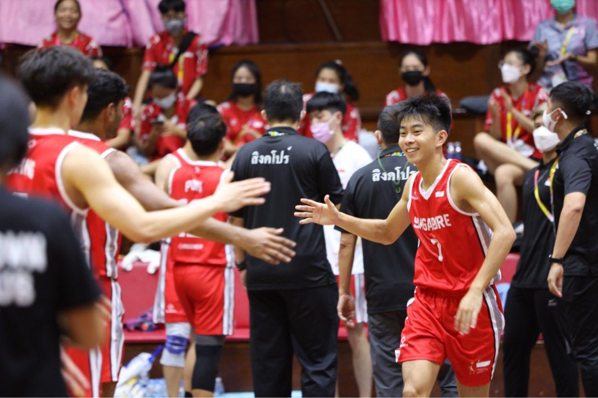

FIBA Asia
Champions Cup
His highest professional league appearance
VANTAGE ACADEMY · SINGAPORE
A player’s experience. A coach’s commitment to your progress.

EXPERIENCE THAT GOES BEYOND THE SIDELINES.03 / MEET YOUR COACH
FOUNDER, VANTAGE ACADEMY
With 7–8 years of coaching experience, Coach Seet leads one-to-one individual coaching, group coaching, and primary and secondary school coaching. He combines a competitive player’s perspective with practical experience developing young athletes.
FROM THE COURT TO THE COACHING BOARD
His highest professional league appearance
Represented Singapore in 2022 and 2024. Bronze medallist in 2022.
Led his secondary school boys to the zonal finals as Head Coach
Currently competing, including NBL Division 1
2022 / REPRESENTING SINGAPORE
ASEAN University Games 2022
Third place. A proud team moment.
Coach Seet represented Singapore at the 2022 ASEAN University Games, where the team earned a bronze medal. Experience on the international stage brings perspective, discipline and team spirit to every coaching session.
2025 / A TEAM MILESTONE
B Division boys. Zonal finalists.
Coach Seet at the helm.
As Head Coach, Seet led his secondary school boys to the 2025 B Division zonal finals. Watch the team’s journey in the featured video.
Featured video: @pearsnaps, with Coach Seet.YOUR NEXT STEP